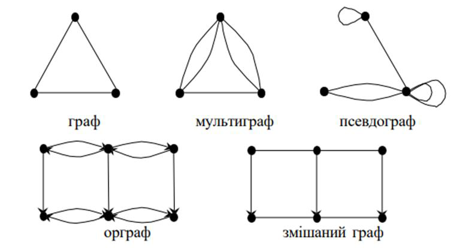

Лекція 1
Основні поняття теорії графів
У цій лекції ви дізнаєтесь:
- що таке граф, вершина та ребро;
- які бувають типи графів;
- як працюють степінь і петля.
Що таке граф
Граф моделює зв'язки між об'єктами. Об'єкти називають вершинами, а зв'язки між ними - ребрами.
Граф позначають як G = (V, E), де V - непорожня множина вершин, а E - множина ребер або дуг між вершинами.
Задача про Кенігсберзькі мости показує, як реальну ситуацію можна перетворити на граф: ділянки суші стають вершинами, а мости - ребрами.

Графічне подання задачі Ейлера про мости.
Базові елементи
- Вершина - окремий об'єкт графа.
- Ребро - зв'язок між двома вершинами.
- Дуга - ребро з напрямком в орієнтованому графі.
- Петля - ребро, початок і кінець якого збігаються.
- Степінь вершини - кількість ребер, інцидентних цій вершині.
Графи бувають орієнтовані й неорієнтовані, зважені й незважені, повні й неповні, прості, мультиграфи та псевдографи.

Фрагмент презентації з прикладами простого графа, мультиграфа, псевдографа та орграфа.
Важливі факти
Сума степенів усіх вершин графа дорівнює подвоєній кількості ребер. Звідси випливає, що кількість вершин непарного степеня завжди парна.
- З яких двох множин складається граф?
- Чим орієнтований граф відрізняється від неорієнтованого?
- Що таке петля та ізольована вершина?